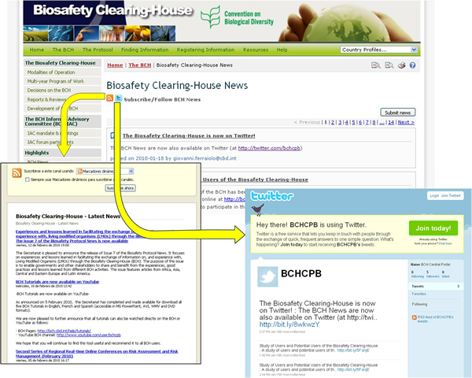

The BCH News link takes the user to the Biosafety Clearing-House News page.. It provides updates on changes to the BCH Central Portal. Registered users can register BCH news using the BCH Management Centre mechanisms for registering information, either through the online registration form for BCH News or through the offline Common Format for BCH News.
Below the Biosafety Clearing-House News page title, there are two buttons: the orange RSS - Subscribe to the BCH News button, and the light blue Follow Us on Twitter button. The RSS button provides a news feed URL that can be used to subscribe to BCH News using an RSS reading tool. The Twitter button takes the user to the BCH page on Twitter, where the user can also stay up-to-date with latest news on the BCH.
